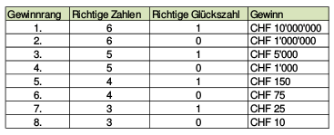

Aufgabe 6.8
Im Zahlenfeld 1 - 42 des neuen Swiss Lotto sind sechs Zahlen anzukreuzen, zusätzlich ist eine „Glückszahl" aus 1 - 6 zu wählen.
- Wie gross ist die Wahrscheinlichkeit bei einem Tipp genau zwei richtige Zahlen im Zahlenfeld anzukreuzen? (ohne Berücksichtigung der Glückszahl)
- Wie gross ist die Wahrscheinlichkeit bei einem Tipp genau vier richtige Zahlen anzukreuzen inklusive der Glückszahl?

- Nachfolgend sehen sie die Gewinnquoten einer Ziehung von Swiss Lotto, in der der Jackpot mit 10 Millionen gefüllt war. Bestimmen Sie die Wahrscheinlichkeiten der 8 Gewinnränge und daraus die Gewinnerwartung für einen Tipp. In Swiss Lotto müssen pro Spiel mindestens zwei Tipps abgegeben werden, derzeit zu Kosten von 5 Fr. Welche Gewinnerwartung besteht daher pro eingesetzten Franken?

- Nutzen Sie Binomialkoeffizienten: $\binom{n}{k}$ für die Anzahl der Möglichkeiten
- Bei Teil (a): $\binom{6}{2}$ für richtige, $\binom{36}{4}$ für falsche Zahlen
- Bei Teil (b): Berücksichtigen Sie sowohl Zahlenfeld als auch Glückszahl
Swiss Lotto System:
- 6 aus 42 Zahlen im Hauptfeld
- 1 aus 6 als Glückszahl
- Gesamtzahl Kombinationen: $\binom{42}{6} \cdot \binom{6}{1} = 5'245'786 \cdot 6 = 31'474'716$
(a) Wahrscheinlichkeit für genau 2 Richtige (ohne Glückszahl)
Wir müssen berechnen:
- 2 richtige Zahlen aus den 6 gezogenen: $\binom{6}{2} = 15$
- 4 falsche Zahlen aus den 36 nicht gezogenen: $\binom{36}{4} = 58'905$
- Gesamtzahl Möglichkeiten im Zahlenfeld: $\binom{42}{6} = 5'245'786$
Wahrscheinlichkeit: $$P(\text{genau 2 Richtige}) = \frac{\binom{6}{2} \cdot \binom{36}{4}}{\binom{42}{6}} = \frac{15 \cdot 58'905}{5'245'786} = \frac{883'575}{5'245'786} \approx 0.1684 = 16.84\%$$
(b) Wahrscheinlichkeit für 4 Richtige + Glückszahl
Wir müssen berechnen:
- 4 richtige Zahlen aus 6: $\binom{6}{4} = 15$
- 2 falsche Zahlen aus 36: $\binom{36}{2} = 630$
- Richtige Glückszahl: $\binom{1}{1} = 1$ (aus 6 möglichen)
- Gesamtmöglichkeiten: $\binom{42}{6} \cdot \binom{6}{1} = 31'474'716$
Wahrscheinlichkeit: $$P(\text{4R + GZ}) = \frac{15 \cdot 630 \cdot 1}{31'474'716} = \frac{9'450}{31'474'716} \approx 0.0003\% = 0.03\%$$
(c) Systematische Berechnung aller Gewinnränge:
Für k richtige Zahlen und Glückszahl (GZ): $$P(k\text{R + GZ}) = \frac{\binom{6}{k} \cdot \binom{36}{6-k} \cdot 1}{31'474'716}$$
Für k richtige Zahlen ohne Glückszahl: $$P(k\text{R}) = \frac{\binom{6}{k} \cdot \binom{36}{6-k} \cdot 5}{31'474'716}$$
| Rang | Bedingung | Anzahl Kombinationen | Wahrscheinlichkeit | Gewinnquote |
| 1 | 6R + GZ | 1 | $3.18 \times 10^{-8}$ | 10'000'000 Fr |
| 2 | 6R | 5 | $1.59 \times 10^{-7}$ | 467'072 Fr |
| 3 | 5R + GZ | 216 | $6.86 \times 10^{-6}$ | 7'341 Fr |
| 4 | 5R | 1'080 | $3.43 \times 10^{-5}$ | 628 Fr |
| 5 | 4R + GZ | 9'450 | $3.00 \times 10^{-4}$ | 151 Fr |
| 6 | 4R | 47'250 | $1.50 \times 10^{-3}$ | 36 Fr |
| 7 | 3R + GZ | 142'800 | $4.54 \times 10^{-3}$ | 21 Fr |
| 8 | 3R | 714'000 | $2.27 \times 10^{-2}$ | 10 Fr |
Erwartungswert pro Tipp:
\begin{align*} E[X] &= \sum_{i=1}^{8} P(\text{Rang } i) \cdot \text{Gewinnquote}_i\\ &= 3.18 \times 10^{-8} \cdot 10'000'000 + 1.59 \times 10^{-7} \cdot 467'072 + \ldots\\ &\approx 0.318 + 0.074 + 0.050 + 0.022 + 0.045 + 0.054 + 0.095 + 0.227\\ &\approx 0.89 \text{ Fr} \end{align*}
Bei diesem (optimistischen) Jackpot beträgt die Gewinnerwartung etwa 0.89 Fr pro Tipp.
Gewinnerwartung pro eingesetzten Franken:
- Kosten für 2 Tipps (Mindestspiel): 5 Fr
- Gewinnerwartung für 2 Tipps: ca. $2 \cdot 0.89 = 1.77$ Fr
- Pro eingesetzten Franken: $\frac{1.77}{5} = 0.35$ Fr